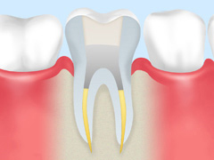

- トップ
- 虫歯治療、根管治療
高田歯科クリニックの精密な虫歯治療
横浜市港北区網島の歯医者「高田歯科クリニック」では、さまざまな診療場面でマイクロスコープ（手術用顕微鏡）を活用しています。こちらでは、当院が手がけるマイクロスコープを使った精度の高い虫歯治療・根管治療についてご説明します。
虫歯治療
虫歯になる原因
お口の中で「虫歯菌」が「糖分」と出会って作り出す”酸”によって、「歯」が溶かされていくのが虫歯です。つまり、虫歯になる要素には、「歯」と「虫歯菌」、「糖分」の3つがあり、さらに、「時間の経過」が加わることで、虫歯が発生します。
虫歯を予防するためには、できるだけこの3つの要素が重なる時間を短くすることが重要です。3要素のうち、「歯」はなくてはならない存在です。また、プラーク（歯垢）の中に潜む「虫歯菌」は細菌ですので完全にお口の中から除去することは不可能だと思っていいでしょう。ですから、「糖分」がお口の中に残る時間をできるだけ短くすること＝食後にしっかりブラッシングすることが重要なのです。
虫歯の程度と治療方法
※表は左右にスクロールして確認することができます。
| 進行段階 | 症状と治療法 | |
|---|---|---|
| C0 | 歯の表面にあるエナメル質が、わずかに溶けて白濁して見えます。まだ痛みやしみる症状はありません。 この段階であれば、適切なブラッシングでプラークや虫歯菌を減らし、フッ素塗布などで再石灰化を促せれば治癒する可能性があります。 |
|
| 初期の虫歯 | ||
| C1 | エナメル質が溶かされています。エナメル質の下の象牙質に刺激が伝わり、冷たいものを口にするとしみる症状が出てきます。自覚症状を感じない方もいます。 虫歯に溶かされた部分を削り、歯科用プラスチック（レジン）で埋めます。 |
|
| エナメル質の虫歯 | ||
| C2 | 象牙質まで溶かされています。冷たいもの・甘いものを口にしただけで、歯がしみるようになってきます。 痛みを感じるため、治療時に麻酔を行うことがあります。虫歯になっている歯質を削り、詰め物（インレー）を取り付けます。 |
|
| 象牙質の虫歯 | ||
| C3 | 歯髄（歯の内部を通る血管と神経）にまで虫歯が達しています。何もしていないのに、激しく歯が痛み、温かいものを口にしても歯にしみます。 この段階になると、歯の内部を治療する「根管治療」が必要になります。 |
|
| 神経まで達した虫歯 | ||
| C4 | 歯ぐきから出ている歯質がほとんど溶かされている状態です。神経も死んでいるため、痛みはすでに感じなくなっていますが、放置すると歯の内部で膿み、激しい痛みに襲われます。 根管治療で対応できることもありますが、歯根部まで汚染されていると、ほとんどの場合、抜歯することになります。 |
|
| 末期の虫歯 | ||
虫歯にならないためのケア
虫歯にならないためには、毎日のブラッシングなどのセルフケアと、数ヶ月に一度の歯科医院で受けるメインテナンスを併用することが重要です。当院ではマイクロスコープ（手術用顕微鏡）を使用し拡大視野下でメインテナンスを行うことができるため虫歯の早期発見、再発予防につながります。（保険診療ではマイクロスコープでのメインテナンスは受けれません）
当院の虫歯治療
高田歯科クリニックでは、品質を重視される患者様に、高品質な自費診療をご提案しています。保険診療と比べた時に高い優位性があり、ご要望によっては保険診療ではカバーできない場合があるためご提案させていただいています。
※表は左右にスクロールして確認することができます。
| 虫歯への処置 | 予後 | 費用 | |
|---|---|---|---|
| 保険診療 | 肉眼やルーペの治療になるので、精度や素材も最低限の機能に抑えたものしか使用できない治療方法 | 虫歯に汚染された部分をしっかり除去することが難しく、また、使用できる素材に制限があるため最低限の耐久性しかない。適合に問題があると、虫歯や歯周病の再発リスクがある | 治療工程も少なく、材料も最低限のものを使うため、費用は安く抑えられる |
| 自費診療 | マイクロスコープ（手術用顕微鏡）の拡大視野下で行う精密治療。虫歯の取り残しがなく、極力歯質や神経を温存できる | マイクロスコープ（手術用顕微鏡）の拡大視野下で行う為、虫歯をしっかり除去でき、詰め物・被せ物などの適合がよいため虫歯や歯周病の再発リスクを抑えられる | 考えられる中でベストな治療を行えるため、素材も厳選されたもので費用が高くなる |
| 削り出し・型採り | 材質 | 接着 | |
| 保険診療 | 肉眼もしくはルーペでの処置となるため視認性が低く精度もそこそこ。 印象は決められた連合印象材（アルジネート&寒天）に限定され、変形することがあり適合不良も起こりやすい |
金銀パラジウム合金（保険治療で70年も前に指定された安価な金属） | 接着率を高める特別な処置は行わず、保険で範囲内の材料でつける。 |
| 自費診療 | マイクロスコープ（手術用顕微鏡）を使用するため精密な削り出しができ、型採りはシリコン素材の印象材を用いるため、精度が高い。削った歯と修復物との適合もよい | 美しさ・硬さ・透明感などにおいて天然歯と遜色ないセラミック素材が使用できる。バイオフィルムもつきにくく、金属アレルギーの心配もない | 接着性・審美性ともに世界トップレベルの接着性レジンセメントを使用できる。エッチング・ボンディング・シラン処理など、歯と修復物に表面処理を行うので、接着力がさらに強化される |
根管治療

根管（こんかん）治療は歯内（しない）治療とも呼ばれる、重度の虫歯に対して行われます。歯の内部から虫歯に汚染された歯質や歯髄などの組織を取り除き、しっかりと除菌・消毒をしたのち、被せ物（クラウン）を装着して歯の機能を回復させる治療です。虫歯が神経まで到達している場合に、できるだけ抜歯をせず、歯の根っこを残すために非常に重要な治療となります。
根管治療の流れ
- STEP1.除去・洗浄
虫歯に汚染されている組織（神経・血管・歯質）をしっかり除去・洗浄します
- STEP2.計測
根管内部の深さを測ります
- STEP3.消毒

虫歯菌が残らないよう、さらに消毒をします
- STEP4.薬剤の充填

薬剤を根管内部に充填し密封します
- STEP5.土台の作成

歯根部に被せ物の土台を入れます
- STEP6.完成
被せ物の装着をして完成です
当院の根管治療
術前より根尖部は不透過性が高まり、治癒しています。
根管治療で使用されたリーマー（細い器具）が破折して歯根の中に取り残されていたものを除去。
実際の除去時の動画
マイクロスコープ（手術用顕微鏡）による緻密な治療
肉眼で治療された歯の場合は、手探りの治療になる為、治療済みの歯の内部にトラブルが起き、再治療が必要になるケースが多くあります。手探り（感覚）や経験（勘）による治療には限界があります。マイクロスコープを使用することにより根管内を確認することができ、高い精度で治療を行うことができます。